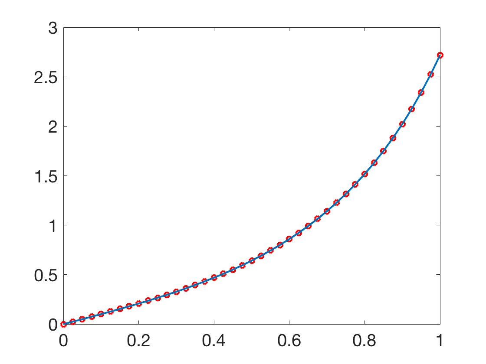
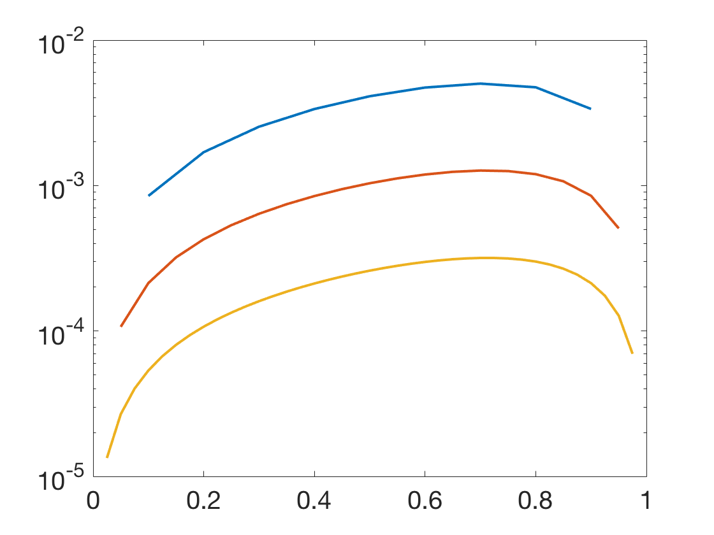
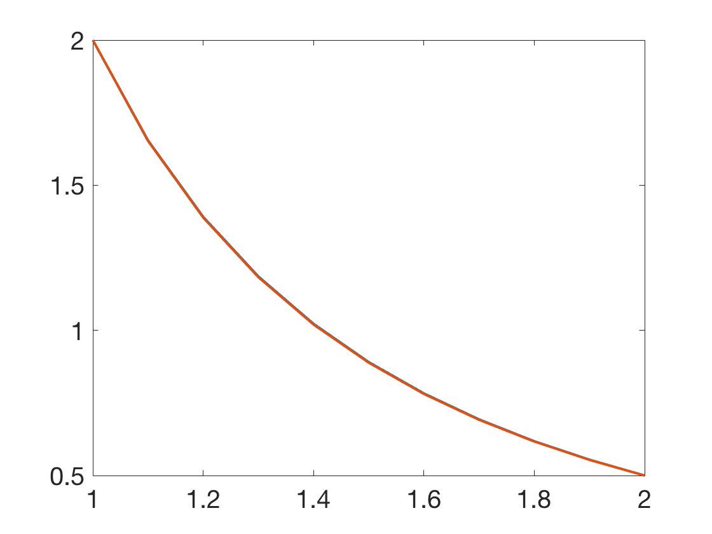
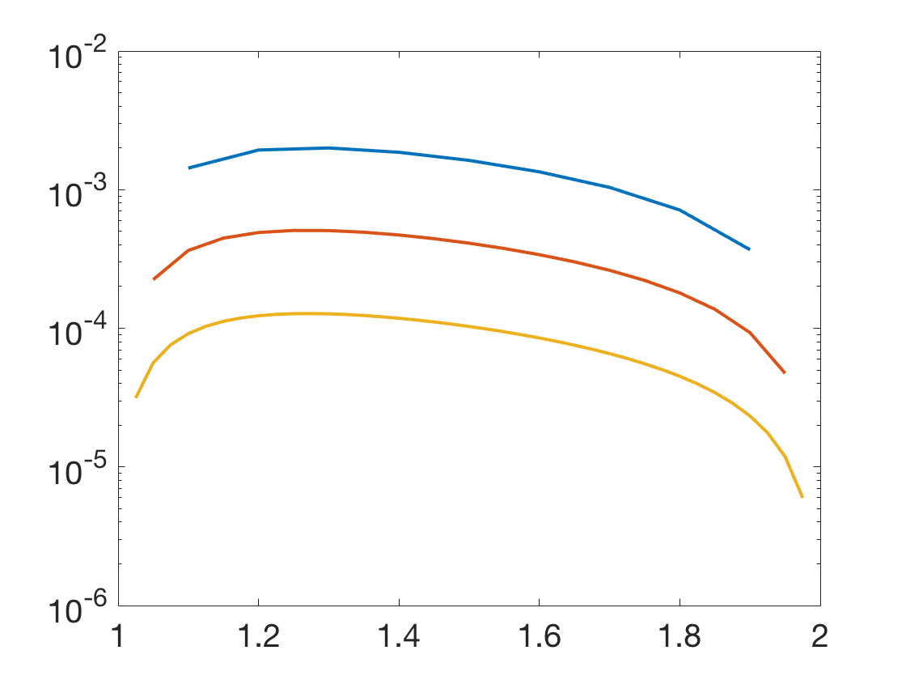

Additional Examples 7.2
1 Use finite differences to approximate the solution \(y(t)\) to the linear BVP
\[ \left\{
\begin{array}{l}
y'' = (4t^2+6)y\\
y(0)=0\\
y(1)=e
\end{array} \right. \]
for \(n=9\). Plot the approximate solution together with the exact solution \( y = te^{t^2} \).
Plot the approximation errors
on the interval in a separate semilog plot for \(n=9, 19\) and \(39\).
Let \(t_0=0, t_1=h, \ldots, t_{n+1}=1\) be the time steps where \( h = 1/(n+1). \)
The finite difference version of the equation at \(t_i\) is
\[\frac{w_{i+1}-2w_i+w_{i-1}}{h^2} -(4t_i^2+6)w_i = 0,\]
which can be rewritten as
\[ w_{i-1}-[2+h^2(4t_i^2+6)]w_i+w_{i+1} = 0 \]
at each step \( t_i\). There is a system of \(n \) equations in \( n\) unknowns
\[\left[\begin{array}{cccc}
\alpha_1&1&0&0\\
1&\alpha_2&\ddots&0\\
0&\ddots&\ddots&1\\
0&0&1&\alpha_n
\end{array}\right]
\left[\begin{array}{c}
w_1\\w_2\\\vdots\\w_n
\end{array}\right] =
\left[\begin{array}{c}
-y(0)\\0\\\vdots\\-y(1)
\end{array}\right]
\]
for the solution values \(w_i\), where \(\alpha_i = -[2+h^2(4t_i^2+6)] .\)
Solving for the values \(w_1,\ldots, w_n\) results in the approximate solution
below (red) for \(n=9\) compared with the exact solution (blue), and the error plot for \(n=9\) (blue), 19 (red) and 39 (yellow).


2 Use finite differences to approximate the solution \(y(t)\) to the nonlinear BVP
\[ \left\{
\begin{array}{l}
y'' = \frac{3}{2}t^2y^3\\
y(1)=2\\
y(2)=1/2.
\end{array} \right. \] Plot the solution for \(n=9\) together with the exact solution \( y = 2/t^2 \). Plot the approximation errors
on the interval in a separate semilog plot for \(n=9, 19\) and \(39\).
Let \(t_0=0, t_1=h, \ldots, t_{n+1}=1\) be the time steps where \( h = 1/(n+1). \)
The finite difference version of the BVP at \(t_i\) is
\[\frac{w_{i+1}-2w_i+w_{i-1}}{h^2} -\frac{3}{2}t_i^2w_i^3 = 0,\]
which can be rewritten as
\[ w_{i-1}-[2w_i+\frac{3}{2}h^2t_i^2w_i^3]+w_{i+1} = 0 \]
at each step \( t_i\).
Using multivariate Newton's method iteration as in Example 7.9, the equations are solved for \(w_1,\ldots, w_n,\)
resulting in the plot below for \(n=9\) and the error plot for \(n=9\) (blue), 19 (red) and 39 (yellow).

